Вентилятор BORK P801
Основной принцип работы циркуляционного вентилятора BORK P801 заключается в равномерном распределении воздушных потоков в помещении.
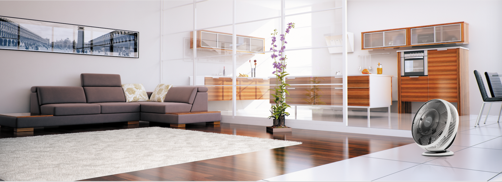Дуновение или ветер
Дуновение ветра летним днем мы воспринимаем с радостью. Ветер же в доме все воспринимают как сквозняк. Поток воздуха от вентилятора, направленный в лицо, вряд ли можно долго переносить.
Многие классические вентиляторы создают концентрированный воздушный поток. Расстояние воздушного потока у них невысоко, даже на высоких скоростях. При этом они достаточно шумны.
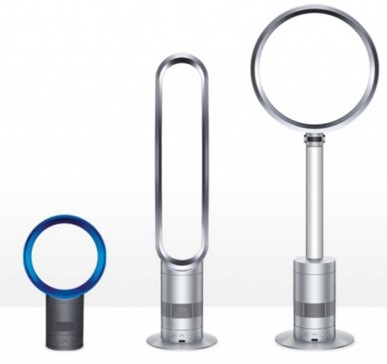Есть технически интересные и качественные вентиляторы. Они могут иметь больший воздушный поток. За счет высокой скорости прохождения воздуха через узкие отверстия создается избыточный шум. На минимальной скорости шум минимален, правда, как и поток воздуха.

GreenFan – это эксклюзивная технология, запатентованная в Японии и имеющая международный патент. За счет особой конструкции лопастей от одного вентилятора генерируется два потока воздуха с различными скоростями. Лопасти были разработаны так, чтобы два типа воздушного потока циркулировали вместе и далее концентрировались в одной точке.
Далее образуется единый мощный и широкий воздушный поток. Эта технология позволила перемещать больше воздуха до 15 метров без увеличения размера лопастей. При этом рассеянный воздушный поток создается при любых оборотах двигателя.
Равномерность температуры
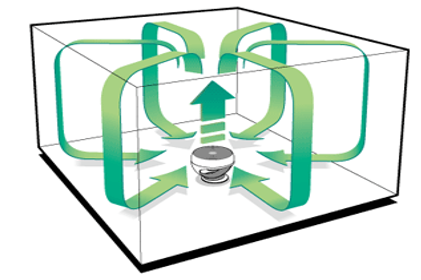На максимальной скорости вентилятор BORK P801 прокачивает через себя 52 m3 в минуту, это объем 20 метровой комнаты за 1 минуту. Направив BORK P801 в потолок обеспечивается эффективная циркуляция воздуха в помещении. Это гарантирует равномерность температуры воздуха между полом и потолком, исключая неприятные ощущения. Вы можете повысить эффективность вашего кондиционера и обогревателя. Другими словами, вы можете повышать или понижать термостат на 2 или 3 градуса и тратить меньше энергии.
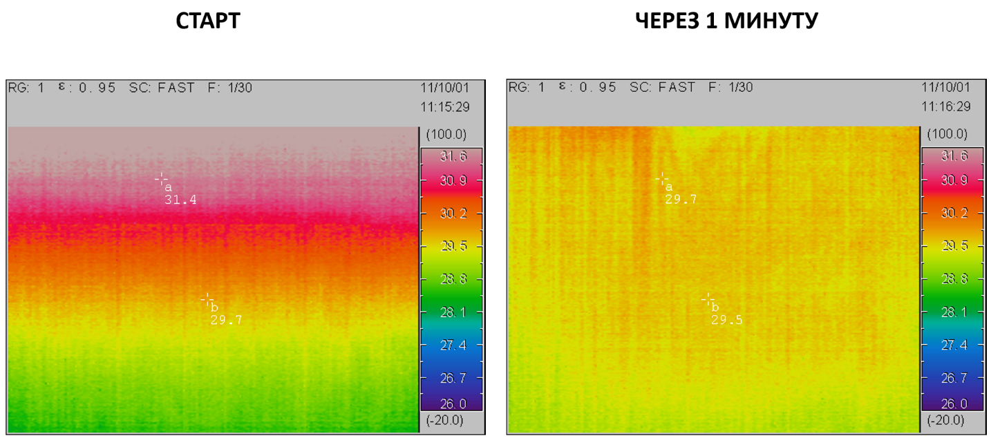Летом - температура выравнивается, потолок остывает и не греет человека при помощи инфракрасного излучения. При использовании кондиционера прохлада не скапливается у пола.
Зимой – эффективный обогрев всего воздуха в помещении, а не под потолком.
Кондиционер на две комнаты
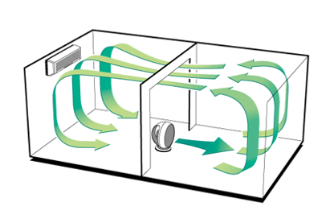Или кондиционирование большого помещения…
Или обогрев зимой…
Проветривание верхнего этажа
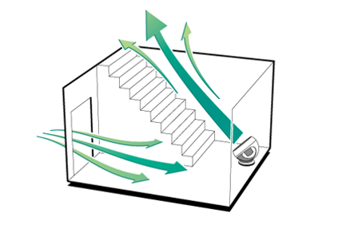Когда наступает лето, в частном доме становится жарко, особенно под крышей, на 2-ом этаже. При этом практически перестает работать вентиляция. Становится жарко и душно. Такой вариант проветривания поможет избавиться от данной проблемы.
Свежий воздух за секунды
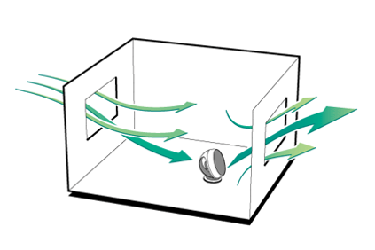Летом, бывает, что в квартире душно, а на улице полный штиль, особенно когда окна квартиры выходят на одну сторону. Зимой, окно, открытое в режиме проветривания, не всегда обеспечивает должное поступление свежего воздуха в комнату, при этом холодный воздух стелется по полу. Гораздо эффективней запустить свежий воздух за считанные секунды и закрыть окно, и тогда он быстро нагреется от теплых предметом в квартире.
Управление индикация и пульт ДУ
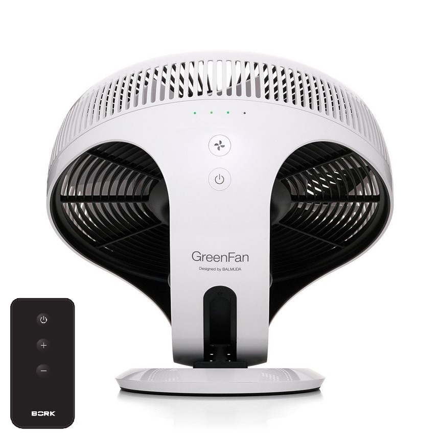Вентилятор спроектирован простым и легким в использовании. Природные силы ветра:
- 1 скорость – Легкий бриз
- 2 и 3 - Средние скорости
- 4 скорость - Мощный поток воздуха
Запатентованная конструкция регулировки наклона BORK P801 позволяет ей двигаться плавно и останавливаться моментально.
Чистка и уход
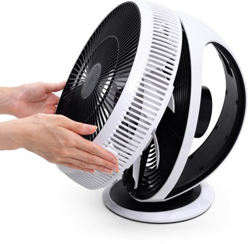Разобрать вентилятор не составит особого труда, и для этого, опять, не понадобятся инструменты. Передняя защитная решетка вентилятора и лопасти могут быть легко удалены и промывают в воде.
Аргументы для продажи BORK P801
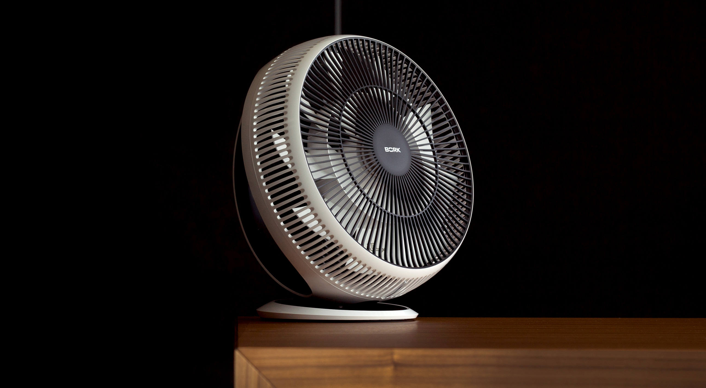- Изобретен в Японии
- Уникальная геометрия лопастей
- Мощный воздушный поток до 15 метров
- Высокая производительность
- BLDC цифровой двигатель
- Низкое энергопотребление – 20 Вт = 850 об/мин.
- Низкий уровень шума 13 Дб
- Компактные габариты
- Легкое изменение угла поворота
- ПДУ
- Исключительный дизайн
- Системы безопасности
- Простота использования и обслуживания
- Изменения положения адаптера
Технические характеристики
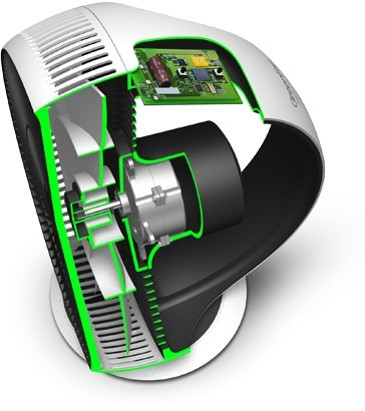
Автовольтаж: 100 – 240 В
Мощность: 3 – 20 Вт
Количество скоростей: 4
Скорость потока: 230 метр/мин
Кол‐во оборотов: Max 850 об/мин
Производительность макс.: 52m3/мин
Габариты (В х Ш х Г) 34 х 25,6 х 36 см
Вес 2,5 кг
Страна разработчик: Япония
Страна производитель: Китай
Номинальное напряжение на входе: AC 100–240В
Номинальное выходное напряжение: DC 12 В
Сила тока: 3 A
Длина шнура: 1,8 м